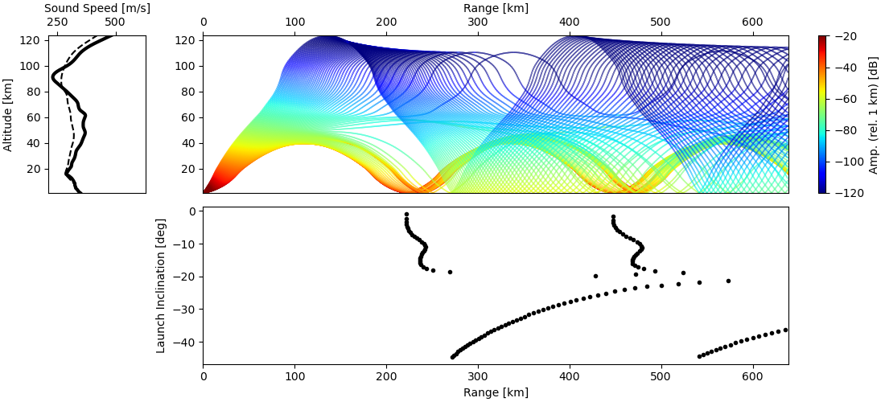

Advanced Usage¶
Introduction…
Range Dependent Analysis¶
Using the --atmo-file parameter defines a single atmospheric specification to use for a stratified atmospheric model. In cases where propagation extends more than a few hundred kilometers, horizontal variations in the atmospheric structure can become significant. Range dependent atmospheric structure can be used in infraGA/GeoAc via specification of an atmospheric file prefix as well as horizontal grid nodes. An example 4x4 grid is provided in the examples/profs directory that includes 16 atmospheric files (example0.met, example1.met, example2.met, etc.) along with example_lat.dat and example_lon.dat that contain the latitude and longitude of the grid nodes.
infraga sph prop --atmo-prefix profs/example --grid-lats profs/example_lat.dat --grid-lons profs/example_lon.dat --src-lat 40.0 --src-lon -102.5 --azimuth -90.0 --z-grnd 1.0############################################ #### Running infraga-sph-rngdep #### #### Propagation #### ############################################ Interpolating atmosphere data in 'profs/example'* using format 'zTuvdp'... Setting grid node at (35, -110) with profile profs/example0.met Setting grid node at (35, -106.67) with profile profs/example1.met Setting grid node at (35, -103.33) with profile profs/example2.met ... Setting grid node at (38.33, -110) with profile profs/example4.met Setting grid node at (38.33, -106.67) with profile profs/example5.met Setting grid node at (38.33, -103.33) with profile profs/example6.met ... Setting grid node at (41.66, -110) with profile profs/example8.met Setting grid node at (41.66, -106.67) with profile profs/example9.met Setting grid node at (41.66, -103.33) with profile profs/example10.met ... Propagation region limits: latitude = 35.001, 44.999 longitude = -109.999, -100.001 altitude = 0, 150 Parameter summary: inclination: 0.5, 45, 0.5 azimuth: -90, -90, 1 bounces: 2 source location (lat, lon, alt): 40, -102.5, 1 ground elevation: 1 frequency: 0.1 S&B atten coeff: 1 write_atmo: false write_rays: true write_topo: false write_caustics: false calc_amp: true Calculating ray path: 0.5 degrees inclination, 90 degrees azimuth. Calculating ray path: 1 degrees inclination, 90 degrees azimuth. ... Calculating ray path: 44.5 degrees inclination, 90 degrees azimuth. Calculating ray path: 45 degrees inclination, 90 degrees azimuth.
Note that the various atmospheres are read in and set on the grid nodes in a specific order (cycling through longitude values first). When using a user created grid it’s useful to check that the atmospheric specifications are being ingested and set at the correct nodes. A utility function is available to build a grid for range dependent analysis in Utility Functions.
Visualization of range-dependent results is relatively straightforward and similar those doing so with stratified results; though, only one of the atmospheric files can be visualized so that the arrivals and ray path files must be specified directly.
infraga plot azimuthal --atmo-file profs/example0.met --arrivals profs/example.arrivals.dat --ray-paths profs/example.raypaths.dat
{kind=link}
Although the range-dependent effects aren’t overly obvious in this simulation due to the limited propagation range, comparison of the inclination angles and point-to-point propagation of the ray paths does exhibit variations. Due to the added complexity of multi-variate interpolation needed to compute the gradients of the atmospheric parameters not only in the vertical direction but also in the horizontal, computation of range-dependent ray paths is notably slower than stratified analyses.
For global scale analyses (e.g., analysis of propagation paths from large bolides or volcanic eruptions), one can define a maximum propagation range greater than half of the circumference of the Earth (~24,000 km) so that the great circle distances never reach the break condition and use the --max-tm parameter to define a maximum propagation time (defined in hours): --max-rng 25000 --max-tm 24.0 --bounces 1000
Eigenray Analysis¶
Discussion of eigenray methods…
Waveform Calculations¶
Discussion of waveform methods…
Combined Eigenray + Waveform Methods¶
Discussion of eig_wvfrm methods…
Including Reaslistic Terrain¶
Discussion of how to include terrain…